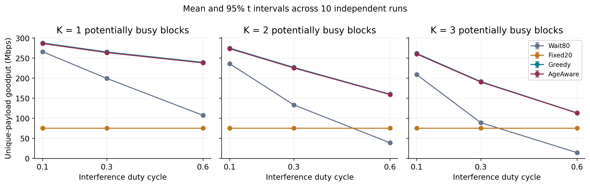
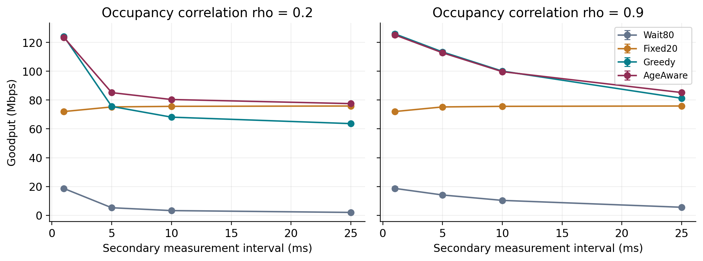
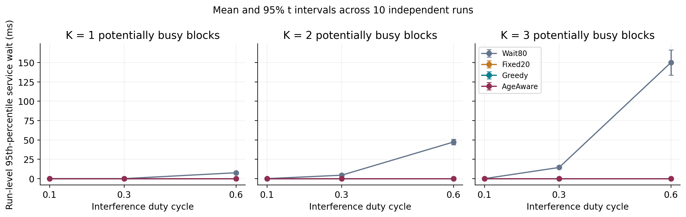
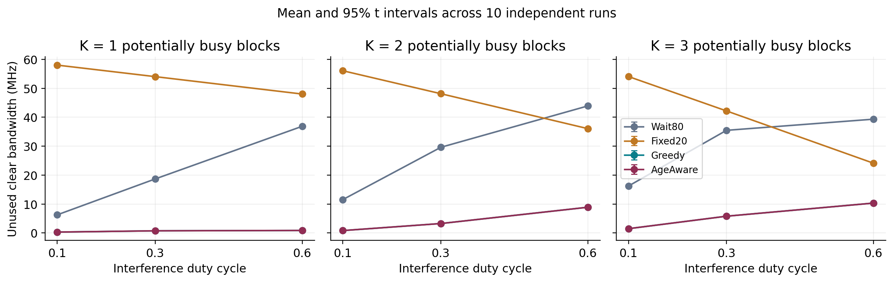
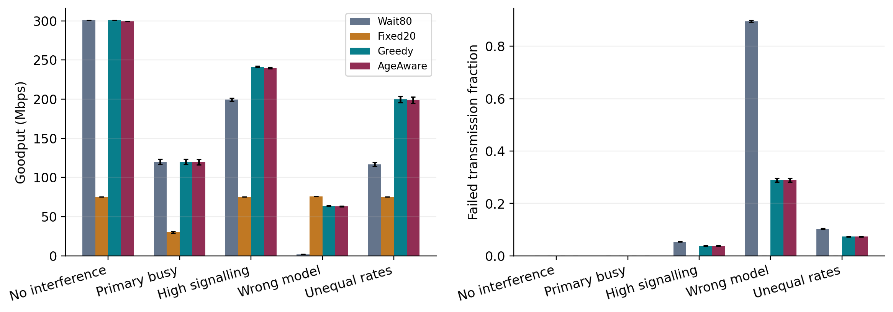

Wi-Fi 7 Puncturing Simulation Results
EEEN3008J, Group 18, Topic 02
Completed 22 experiment settings, 220 shared interference traces and 880 policy runs.
Goodput in two representative settings
Mean ± half-width of the 95% confidence interval, in Mbps.
| Policy | Main sweep K = 2, duty cycle = 0.3 |
Rapidly changing interference Occupancy correlation = 0.2, 25 ms probe interval |
|---|---|---|
| Wait80 | 133.23 ± 2.80 | 2.02 ± 0.15 |
| Fixed20 | 75.20 ± 0.00 | 75.84 ± 0.00 |
| Greedy | 226.68 ± 1.11 | 63.62 ± 0.35 |
| AgeAware | 225.46 ± 1.11 | 77.50 ± 0.05 |
In the 25 ms case, the paired goodput difference for AgeAware versus Greedy is 13.88 ± 0.40 Mbps. The difference is 21.81% relative to Greedy’s mean.
Full summary | Paired comparisons | Run-level data | Trace manifest | Run environment | Data checksums
Performance figures




